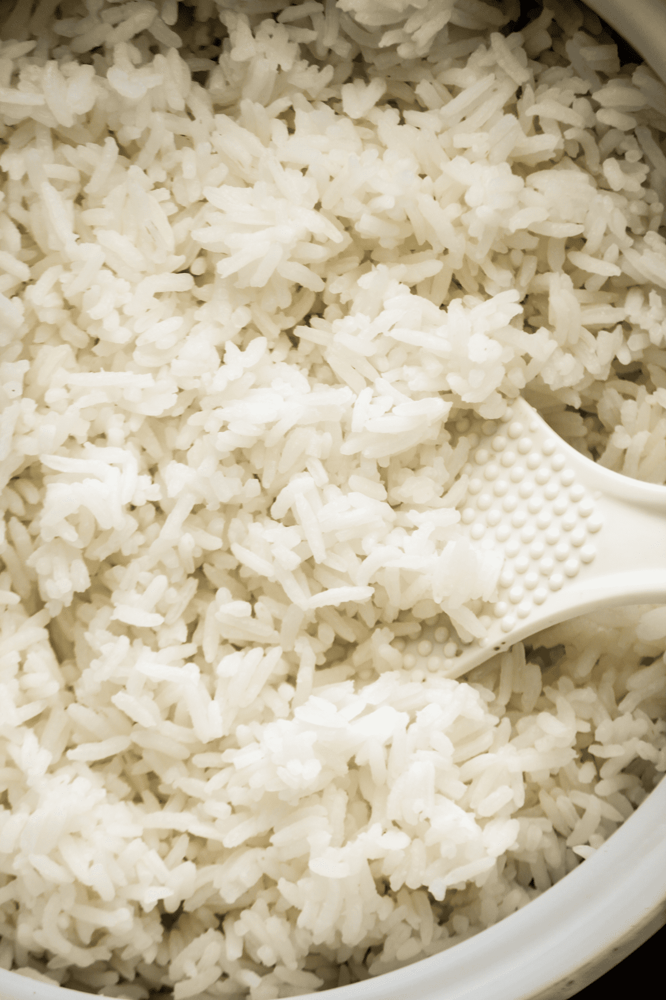

cơm
nguyên liệu
gạo tùy thít
nướt
dụng cụ
nồi cơm điện
chế biến
vo gạo một nước và đổ nước thừa đi
chế lượng nước vừa đủ so với gạo vào nồi
bỏ ruôt nồi vào trong nồi cơm điện & bật chế độ nấu cơm
thành phẩm
